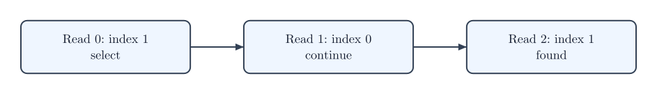
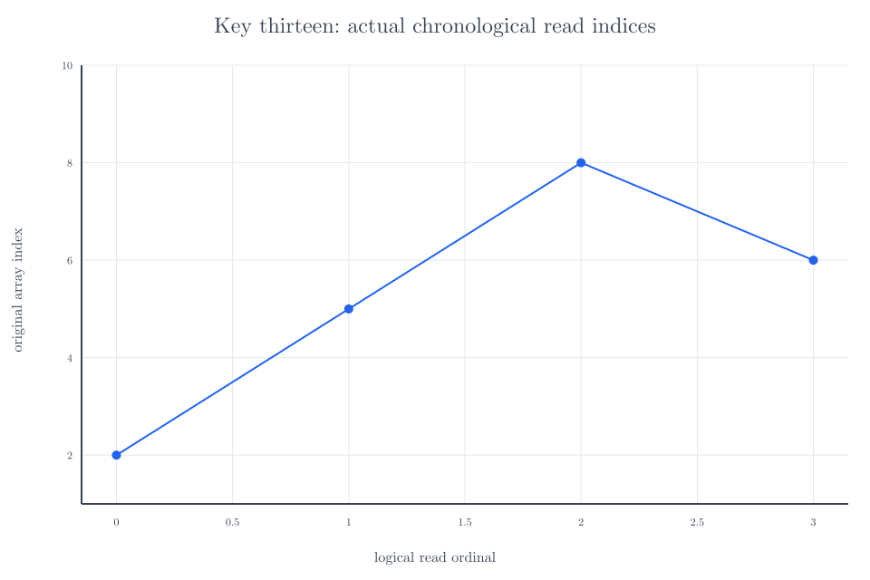
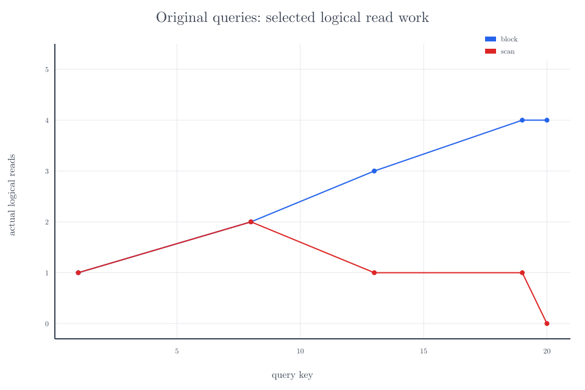
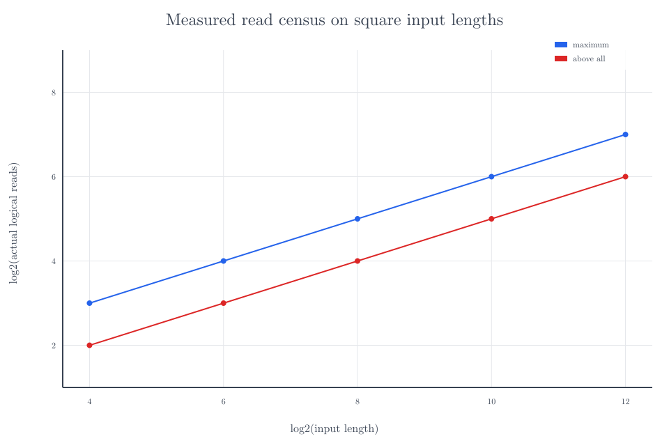

Jump search: select a block, then revisit its beginning
Abstract
Jump search selects a candidate block by its final value, then scans that block for the first equal element. We begin with an actual repeated endpoint, retain the original ten odd numbers and five keys, and derive the square-root balance. Native histories expose the producing reads without rerunning prefixes. Exact integer schedules and clipped arithmetic cover virtual wide lengths. Probe counts describe logical inspections, not physical memory traffic or elapsed speed.
A repeated endpoint in four elements
For [1,3,5,7] and key 3, the block size is two. Reading index 1 selects [0,2); scanning then reads index 0 followed by index 1 again. The native diagram follows these actual records. The method is not strictly forward-only, and a probe is not necessarily a distinct array position.
#include <dm/dm.hpp>
int main() {
std::filesystem::create_directories("build");
const auto t = dm::algorithms::jump_search_trace({1, 3, 5, 7}, 3);
const char *names[] = {"advance", "select", "continue", "found", "passed"};
dm::graphics::Diagram d;
std::print("| read | index | value | branch |\n| ---: | ---: | ---: | --- |\n");
for (std::size_t i = 0; i < t.probes.size(); ++i) {
const auto &e = t.probes[i];
std::print("| {} | {} | {} | {} |\n", i, e.index, e.value,
names[int(e.action)]);
d.node(std::to_string(i), {5. * i, 0},
std::format("Read {}: index {}\n{}", i, e.index,
names[int(e.action)]));
if (i)
d.edge(std::to_string(i - 1), std::to_string(i));
}
d.save_svg("build/jump_search_repeat.svg");
}| read | index | value | branch |
|---|---|---|---|
| 0 | 1 | 3 | select |
| 1 | 0 | 1 | continue |
| 2 | 1 | 3 | found |

Why square-root blocks
For n positive elements and block size s, endpoint reads number at most ceil(n/s), and the selected scan reads at most s elements. Hence
Balancing n/s and s suggests s near sqrt(n). The kernel uses exact floor(sqrt(n)) by division-safe integer search, without floating conversion. Empty input has an all-zero schedule. Preparation costs O(log(n+1)) word operations, and reads cost O(sqrt(n)); the default search needs constant auxiliary storage. The scan may jump backward from an endpoint to the block beginning, so the old strictly-forward/tape-access explanation was inaccurate.
Keep the ten original odd numbers and five keys
The original input is [1,3,5,7,9,11,13,15,17,19], queried for 13,1,19,8,20. For key 13 the block probes are indices 2,5,8, followed by scan index 6. This chronology is captured inside the producing kernel; no second implementation reconstructs its choices.
#include <dm/dm.hpp>
int main() {
std::filesystem::create_directories("build");
const std::vector<int> a = {1, 3, 5, 7, 9, 11, 13, 15, 17, 19};
std::print("| key | found | first index | logical probes |\n| ---: | --- | ---: | ---: |\n");
for (int key : {13, 1, 19, 8, 20}) {
const auto r = dm::algorithms::jump_search(a, key);
std::print("| {} | {} | {} | {} |\n", key, r.found, r.index, r.probes);
}
const auto t = dm::algorithms::jump_search_trace(a, 13);
std::vector<double> x, y;
std::print("\n| read | block begin | block end exclusive | index | value |\n| ---: | ---: | ---: | ---: " "| ---: |\n");
for (std::size_t i = 0; i < t.probes.size(); ++i) {
const auto &e = t.probes[i];
std::print("| {} | {} | {} | {} | {} |\n", i, e.block_begin,
e.block_end, e.index, e.value);
x.push_back(i);
y.push_back(e.index);
}
if (t.analysis.result.index != 6 || t.analysis.result.probes != 4)
throw std::runtime_error("original search");
auto p = dm::graphics::RPlot::create();
p.line(x, y, "", {37, 99, 235}, 2).points(x, y, "", {37, 99, 235}, 5).title(
"Key thirteen: actual chronological read indices").x_label(
"logical read ordinal").y_label("original array index").y_limits(
1, 10).save_svg("build/jump_search_original.svg");
}| key | found | first index | logical probes |
|---|---|---|---|
| 13 | true | 6 | 4 |
| 1 | true | 0 | 2 |
| 19 | true | 9 | 5 |
| 8 | false | -1 | 4 |
| 20 | false | -1 | 4 |
| read | block begin | block end exclusive | index | value |
|---|---|---|---|---|
| 0 | 0 | 3 | 2 | 5 |
| 1 | 3 | 6 | 5 | 11 |
| 2 | 6 | 9 | 8 | 17 |
| 3 | 6 | 9 | 6 | 13 |

Contracts, duplicate ties and complete traces
Sorted nondecreasing input is an unchecked precondition; checking it would add a linear scan. Every earlier rejected block ends below the key, so none contains an equal value. Scanning the first selected block in order therefore returns the first occurrence, including duplicates. A value above the key terminates absence. Empty input returns no match, index −1 and zero probes. All int values are supported without subtracting keys.
A block read performs one greater-or-equal test. A scan performs equality followed by a greater-than test only if unequal. Thus logical reads and key comparisons differ. Snapshots own inspected values and block bounds, not caller references. Trace admission occurs before each read; its default ceiling is one million complete records, zero disables the optional ceiling, and failures expose no partial trace. The ceiling excludes vector capacities, byte counts and peak RAM. Untraced calls allocate no history.
#include <dm/dm.hpp>
int main() {
std::filesystem::create_directories("build");
std::print("| control | found | index | probes | block reads | scan reads | scan greater tests |\n| --- " "| --- | ---: | ---: | ---: | ---: | ---: |\n");
const auto show =
[](const char *name, const std::vector<int> & a, int key) {
const auto z = dm::algorithms::jump_search_analyze(a, key);
const auto &r = z.result;
std::print("| {} | {} | {} | {} | {} | {} | {} |\n", name, r.found,
r.index, r.probes, z.work.block_reads, z.work.scan_reads,
z.work.greater_tests);
};
show("empty", {}, 0);
show("singleton equal", {1}, 1);
show("duplicate first", {2, 2, 2, 2}, 2);
show("below all", {1, 3, 5}, 0);
show("above all", {1, 3, 5}, 6);
show("gap", {1, 3, 5}, 4);
show("full int extremes",
{std::numeric_limits<int>::min(), 0, std::numeric_limits<int>::max()},
std::numeric_limits<int>::max());
bool rejected = false;
try {
(void) dm::algorithms::jump_search_trace({1, 3, 5, 7}, 3, 2);
} catch (const std::length_error &) {
rejected = true;
}
if (!rejected)
throw std::runtime_error("record ceiling");
std::print("\nA two-record ceiling rejects the three-read tiny search before the next read.\n");
std::vector<double> k, b, l;
for (int key : {1, 8, 13, 19, 20}) {
const auto z =
dm::algorithms::jump_search_analyze({1, 3, 5, 7, 9, 11, 13, 15, 17,
19}, key);
k.push_back(key);
b.push_back(z.work.block_reads);
l.push_back(z.work.scan_reads);
}
auto p = dm::graphics::RPlot::create();
p.line(k, b, "block", {37, 99, 235}, 2).points(k, b, "", {37, 99, 235}, 4).line(k, l, "scan", {220, 38, 38}, 2).points(k, l, "", {220, 38, 38}, 4).title("Original queries: selected logical read work").x_label("query key").y_label("actual logical reads").y_limits(-.3, 5.5).save_svg("build/jump_search_controls.svg");
}| control | found | index | probes | block reads | scan reads | scan greater tests |
|---|---|---|---|---|---|---|
| empty | false | -1 | 0 | 0 | 0 | 0 |
| singleton equal | true | 0 | 2 | 1 | 1 | 0 |
| duplicate first | true | 0 | 2 | 1 | 1 | 0 |
| below all | false | -1 | 2 | 1 | 1 | 1 |
| above all | false | -1 | 3 | 3 | 0 | 0 |
| gap | false | -1 | 4 | 3 | 1 | 1 |
| full int extremes | true | 2 | 4 | 3 | 1 | 0 |
A two-record ceiling rejects the three-read tiny search before the next read.

Exhaust a finite key census, without timing claims
For each odd-number array below, the program queries every integer from −1 through 2n, including values before, between and after stored keys. It reports the largest actual read count, the schedule bound and the above-all count. Square lengths make the upper bound attainable at the last key. No external dataset is needed for these controlled search questions.
#include <dm/dm.hpp>
int main() {
std::filesystem::create_directories("build");
std::vector<double> x, worst, above;
std::print("| n | exact block size | blocks | measured maximum reads | schedule bound | above-all reads " "|\n| ---: | ---: | ---: | ---: | ---: | ---: |\n");
for (std::size_t n = 16; n <= 4096; n *= 4) {
std::vector<int> a(n);
for (std::size_t i = 0; i < n; ++i)
a[i] = 2 * i + 1;
std::size_t maximum = 0;
for (int key = -1; key <= int(2 * n); ++key)
maximum =
std::max(maximum, dm::algorithms::jump_search(a, key).probes);
const auto s = dm::algorithms::jump_search_schedule(n);
const auto r = dm::algorithms::jump_search(a, int(2 * n));
if (maximum > s.max_probes)
throw std::runtime_error("read bound");
std::print("| {} | {} | {} | {} | {} | {} |\n", n, s.block_size,
s.block_count, maximum, s.max_probes, r.probes);
x.push_back(std::log2(n));
worst.push_back(std::log2(maximum));
above.push_back(std::log2(r.probes));
}
auto p = dm::graphics::RPlot::create();
p.line(x, worst, "maximum", {37, 99, 235}, 2).points(x, worst, "",
{37, 99, 235}, 4).line(
x, above, "above all", {220, 38, 38}, 2).points(x, above, "",
{220, 38, 38}, 4).title(
"Measured read census on square input lengths").x_label(
"log2(input length)").y_label("log2(actual logical reads)").y_limits(
1, 9).save_svg("build/jump_search_work.svg");
}| n | exact block size | blocks | measured maximum reads | schedule bound | above-all reads |
|---|---|---|---|---|---|
| 16 | 4 | 4 | 8 | 8 | 4 |
| 64 | 8 | 8 | 16 | 16 | 8 |
| 256 | 16 | 16 | 32 | 32 | 16 |
| 1024 | 32 | 32 | 64 | 64 | 32 |
| 4096 | 64 | 64 | 128 | 128 | 64 |

Lengths must fit ptrdiff_t before signed result indices are produced. Clipped endpoint updates add at most the remaining length, avoiding wrap. The schedule can also be inspected for virtual large lengths without constructing an array. Exact scheduling may differ from floating sqrt rounding near very large perfect-square boundaries; ordinary result and logical-probe compatibility were checked with the frozen original kernel, while independent records checked branch order.
An independent Python schedule/branch oracle checked 1,000 sorted arrays and
4,293 actual probe records. The frozen original kernel matched 104,000 ordinary
queries exactly, including first-match answers and logical probe counts. Native
checks also cover virtual wide schedules, quotas and duplicates. The shared
ten-report build passed 131 native tests, 38 directly instrumented
address/undefined-behaviour sanitizer tests, 89 compiled public examples,
documentation coverage for all 388 scoped definitions and ten representative
clangd hovers. All four complete C++ report programs executed successfully and
their native figures were visually reviewed. Batch receipts are retained under
build/mepml-conversion/batch-174-183/.